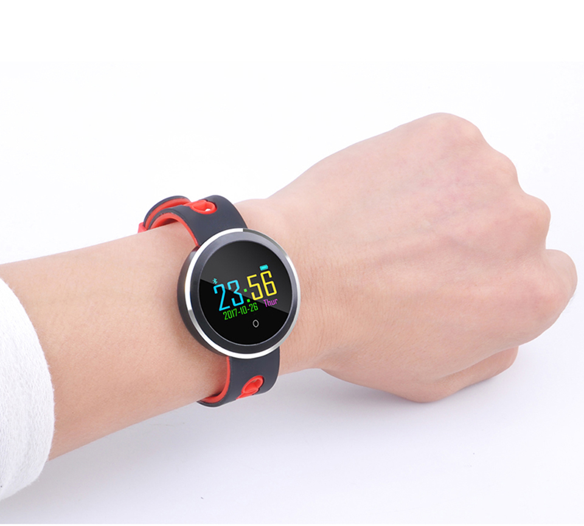
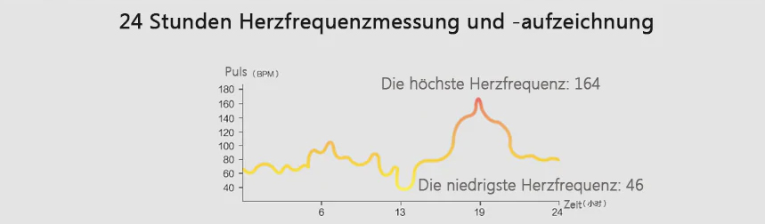

Neue HealthWatch zur Gesundheitsüberwachung ersetzt teure Sportuhren
Gesponsert von Tech Inside
Wenn Sie vorher noch nie eine HealthWatch hatten, dann ist das DIE Uhr für Sie!
Vor ein paar Wochen feierten wir die Einführung einer neuen HealthWatch auf dem Markt, und sie ist günstiger und einfacher zu handhaben als alle zuvor.
Das ist kein gewöhnliche HealthWatch, es ist ausgestattet mit den neuesten Technologien. Es ist ein Äquivalent zu den CHF 400.- teuren Smart-Uhren. Die Ergebnisse, die Sie damit erreichen, sind bemerkenswert.
Warum kann diese Healthwatch vielleicht Leben retten?
Es ist kein Wunder, dass sich Herzerkrankungen und andere gesundheitliche Probleme aufgrund unseres modernen Lebensstils immer mehr häufen. Hauptgrund dieser Erkrankungen ist die Bewegungsarmut vieler Menschen, die nicht regelmäßig Sport treiben. Laut der WHO (Weltgesundheitsorganisation) leidet ein Mensch bereits unter Bewegungsmangel, wenn er sich täglich weniger als 90 Minuten bewegt. Gehören auch Sie zu den Menschen, die sich nicht ausreichend bewegen?
Neben den Auswirkungen, die mit einem bewegungsarmen Lebensstil verbunden sind, werden Herzerkrankungen und andere Krankheiten auch durch eine ungesunde Ernährungsweise, Stress bei der Arbeit und Angst vor alltäglichen Problemen gefördert.
Dies führt zu einer wachsenden Anzahl von Menschen, die ihre Gesundheit vernachlässigen und sich gegen körperliche Aktivitäten entscheiden; nur eine gesunde Lebensweise sorgt für emotionale Ausgeglichenheit und tägliches Wohlbefinden!
Für die Menschen unter uns, die sich nicht ausreichend bewegen und vielleicht sogar ärztliche Routineuntersuchungen meiden, ist diese Health-Armbanduhr der perfekte Helfer: Eine Smartwatch, die alle Vital-Werte verfolgt ist wie ein medizinischer Assistent am Handgelenk.
Aus diesem Grund ist diese SmartWatch auch eine der am schnellsten verkauften weltweit. Alle wollen etwas für ihre Gesundheit tun. Im Moment verkauft sie sich wie verrückt.
Worum geht es überhaupt?
Es geht um die neue HealthWatch und sie ist nun in der Schweiz erhältlich.
Die HealthWatch ist von einem Techniker-Team entwickelt worden. Dieses Expertenteam wollte eine qualitativ hochwertige Armbanduhr mit wichtigen Sensoren für die Gesundheit herstellen, die sich jeder leisten kann, aber auch extrem langlebig ist und genügend Batterie-Leistung hat. Ausserdem wollten Sie die Handhabung so einfach machen damit auch wenig technik versierte Menschen damit gut zurecht kommen
Dafür mussten sie die HealthWatch von Grund auf selbst gestalten. Das Ergebnis all dieser Forschung und Entwicklung war diese Uhr.
Die HealthWatch in Aktion:
Wie funktioniert sie - was kann sie?
- Sie misst Ihren Blutdruck, Pulsfrequenz und Blutsauerstoffgehalt
- Ultrascharfes OLED Display
- Messen Sie Ihre tägliche Bewegung. Die HealthWatch ist die perfekte Lösung für alle, die Ihre körperlichen Aktivitäten und verbrauchten Kilokalorien täglich verfolgen wollen.
- Extrem langlebiges und widerstandsfähiges Material. Die Healthwatch ist wasserdicht (IP67 zertifiziert) und extrem wetterbeständig.
- Nehmen Sie das Telefon mit der HealthWatch ab. Kein Telefon vorkramen aus der Hosentasche mehr.
- Sehr lange Batterielaufzeit ohne täglich aufzuladen. Standby bis zu 150 Tagen!
- Überwachen Sie Ihre Schlafphasen um festzustellen ob Sie im Tiefschlaf, seichten Schlaf oder immer kurz vor dem Aufwachen sind.
Diese HealthWatch ist für jeden gedacht: Egal ob Sie ein junger, aktiver Mensch sind, oder keine Zeit für tägliche körperliche Aktivitäten haben: Die HealthWatch verfolgt alle Ihre Vital-Werte und misst Ihren Gesundheitszustand.
Die HealthWatch ermittelt ausserdem völlig schmerzfrei die Sauerstoffsättigung mittels Lichtsensoren. Die Sauerstoffsättigung ist ein wichtiger Parameter zur Beurteilung der Atemfunktion. In vielen Fällen lässt sie Rückschlüsse auf die Funktion und Tätigkeit der Lunge zu.
Lohnt es sich?
Denken Sie nur darüber nach wie einfach es wäre sich etwas mehr um Ihre Gesundheit zu kümmern. Sie haben immer alle wichtigen Werte im Blick und können beruhigt allen Tätigkeiten nachgehen
Wie erhalte ich die HealthWatch?
So können Sie eine erwerben:
1) Bestellen Sie die HealthWatch von der offiziellen Website
2) Legen Sie die HealthWatch an Ihr Handgelenk an.
3) Sie sind ab jetzt immer informiert über Ihre Vitalwerte und können gegebenenfalls an Ihrer Gesundheit arbeiten.
So einfach ist es!